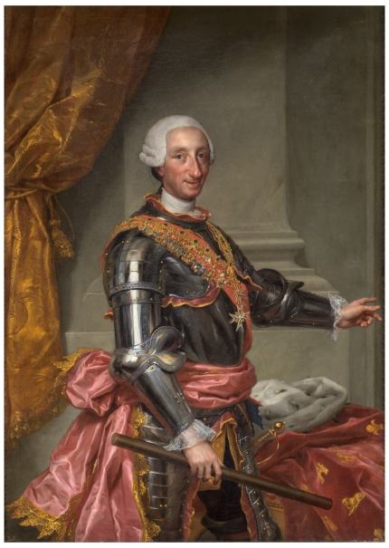

World History Final Project: Southern Europe
Raina's World History Final, not too much about it.
Part I:
One of the more recent interesting events to happen in (roughly) Southern Europe was the discovery of incredibly detailed ancient paintings. The paintings in the Chauvet Cave were found in northern Spain by Jean-Marie Chauvet. Experts have estimated that they were made sometime between 32,000 BCE and 26,000 BCE. These paintings shocked the world as modern humans thought that the techniques used were invented in the last 500 years, but instead have existed for tens of thousands.

Similarities
The people who made the cave paintings had (likely) invented these advanced technologies in art. As the cave was untouched for so long, it is also an amazing example of record keeping behaviors in incredibly ancient societies. Their art style is relatively similar to some of ours from the last few centuries that have now been rediscovered.

Differences
Despite being amazing works of art, modern record keeping and technologies are much different than those from roughly 32,000 years ago. Ours now include microscopic transistors on pieces of silicon (Solid State Drives), magnetic discs (Hard Disc Drive), discs with tiny divots (CD/DVD/Bluray), and much more. We also have books now to mark down our history. Our technology is far more advanced than theirs was.
Works cited
- I used the same source as it has images of the caves and paintings.
- Primary source:
- Groeneveld, Emma. “Chauvet Cave.” World History Encyclopedia, 12 Feb. 2017, https://www.worldhistory.org/Chauvet_Cave/.
- Secondary source:
- Groeneveld, Emma. “Chauvet Cave.” World History Encyclopedia, 12 Feb. 2017, https://www.worldhistory.org/Chauvet_Cave/.
Part II:
More recently, around the turn from before the common era to the common era, Caesar Augustus made some huge changes in his rule. Caesar Augustus was born on 23 September, 63, and died 19 August, 14 CE. He was blood related to Julius Caesar, and was seen as his heir. In 27 BCE, Augustus converted the Roman Republic into the Roman Empire, making himself the first emperor of said empire. This event began the era known as Pax Romana, or “Roman peace”. This era later ended in 117 CE, lasting about 2 centuries.

Similarities
You’ve heard the saying “all roads lead to Rome” which references how they (the Romans) built quite a lot of roads during the Empire’s existence. Well they’re not the only ones to do that. The Mauryan Empire, which existed between 322-185 BCE, in northwest India. The third Mauryan emperor, Ashoka also built quite a lot of roads with the intention of trade. From Augustus’ self-written deeds, during his seventh time as Consul, he “rebuilt the Flaminian road from the city to Ariminum and all the bridges except the Mulvian and Minucian” (The Deeds of the Divine Augustus, translated 1998).

Differences
While they were similar in road design, they were incredibly far apart, in time, and location. As I mentioned before, Maurya was located in India whilst Rome was located in, well, Rome. This huge location distance affects the surrounding geography and how the cultures evolved. Maurya’s location being the Indian Subcontinent, it has a tropical-monsoon climate and a tropical wet-dry climate. Rome’s location being in Italy and the Mediterranean, means that it has a temperate-mediterranean climate, warm and dry summers, and wet winters. They also existed around 200 years apart meaning that a lot of technological advancements happened between the two.
Works cited
- Primary source:
- Augustus, Caesar. “The Deeds of the Divine Augustus.” Massachusetts Institute of Technology, translated by Thomas Bushnell, https://classics.mit.edu/Augustus/deeds.html. Accessed 12 Jan. 2024.
- Secondary source:
- Authors, History, editor. “Augustus.” History.com, 12 June 2023, https://www.history.com/topics/ancient-rome/emperor-augustus#section_3.
Part III:
Over the next thousand or so years, many of the empires that rose, later fell. But, more importantly, there was a huge global (sorta) pandemic that consumed the globe, COVI- oh wait wrong global health issue! The Black Death was a huge pandemic that many believe started in Eastern Asia, and was spread across Europe. It is now known as a form of the Bubonic Plague. The symptoms that would appear included but not limited to: fever, swelling of lymph nodes, headaches, chills, weakness, and flea bites. It is caused by the bacterium Yersinia pestis, which spreads from fleas to rodents to humans. After a ton of research, study, and excavation, they discovered a precursor to the Black Death, the Chüy Valley strain of Yersinia pestis. The Black Death also caused the fall of empires as it left many peasants unable to work, knights and nobles unable to pay, and kings with a ton of issues.
Similarities
In comparison to modern pandemics (most notably the COVID-19 pandemic which started in 2020), the Black Death took over the world and ruined everybody’s lives. Most diseases leave you feeling ill, with a fever, weak, cold, and in pain, and the Black Death also does. It is just how your immune response works. In fact, the Black Death still exists to this day, but it’s much easier to cure as we have medicine for it which didn’t exist in the 1300s. They both have had incredibly high death rates and have easily taken over the world, through similar means. The Black Death spread through people traveling and trading across Eurasia, and COVID-19 was spread through the whole world by travelers and trade.
Differences
There are quite a few differences between the Black Death and COVID-19, most importantly, is the type of disease. COVID-19 is caused by SARS-CoV-2, a type of positive-sense single-stranded RNA virus. However, the Black Death isn’t a virus, it is Yersinia pestis, a gram-negative, non-motile, coccobacillus bacteria. In modern day, it’s incredibly easy to treat bubonic plague (the Black Death), as all you need is a common antibiotic. On the other hand, COVID-19 is a lot harder to treat, you can’t use antibiotics, and instead have to rely on normal healing. Despite COVID-19 being harder to treat, it is a lot less serious than bubonic plague is.
Works cited
- Primary source:
- Unknown. “Chronicle of the Black Death.” British Library, https://www.bl.uk/learning/timeline/item126557.html.
- Secondary source:
- Barnhart, Max. “Scientists Say They’ve Solved a 700-Year-Old Mystery: Where and When Black Death Began.” National Public Radio, 30 June 2022, https://www.npr.org/sections/goatsandsoda/2022/06/30/1106858954/scientists-say-theyve-solved-a-700-year-old-mystery-where-and-when-black-death-b.
Part IV:
Eventually the world left the Black Death in the past, and Italy entered a renaissance between the 14th and 17th century. Scholars became more humanist and secular, peasants didn’t have much change. The name “Renaissance” meant that it was a revival of antiquity and thinking. It occurred due to a huge increase of wealth in merchants. These merchants then paid scholars and other intellectuals of the era to do scientific and other kinds of work. Some of these forms of work include architecture, paintings, sculptures, literature, music, sciences, technology, exploration, and philosophy. Over time Italy became one of the leaders in these fields. Another line of work, banking, also saw huge success, for example, the Medici family.

Similarities
Italy wasn’t the only country to have a Renaissance, 10+ countries actually had them. Pretty much all of them focused on the same forms of work and art from the Italian Renaissance. For the French, it was partially started by the disbelief in religion after the Black Death and the importing of Italian arts. Many Renaissance countries began to use similar techniques in their art styles, whilst also differentiating themselves from the others. The renaissance was as previously stated related to the secularism following the Black Death and happened at the same time as the Protestant Reformation.

Differences
Both Italy and England had a Renaissance in the 14th-17th centuries. For English Renaissance art forms, literature and music were the prominent forms. In Italy however, the dominant forms of art tended to be the visual arts (i.e. paintings and sculptures). An example of popular Renaissance pieces would be one of Shakespeare's plays (English) or one of DaVinci's paintings/designs/models (Italian). Other countries such as Poland also developed more during the Renaissance as not many works were translated into Polish, so those were some major things that happened over there. Portugal too became incredibly wealthy, but had major focuses in cartography as they did a ton of discovery and exploration.
Works cited
- Primary source:
- Leonardo di ser Piero da Vinci, Mona Lisa, 1503
- Secondary source:
- Editors, History, editor. Italian Renaissance. 17 June 2020, https://www.history.com/topics/renaissance/italian-renaissance.
Part V:
After the Renaissance occurred, a very similar event happened, the Enlightenment. The Age of Enlightenment was an era of huge leaps in philosophy and reasoning. For the region of Southern Europe, I am covering Spain’s Enlightenment. The Spanish Enlightenment was the expansion of scientific knowledge that was funded by the Spanish crown. The empire helped a Prussian scientist on an expedition to Spanish America, in which they gave him aid and instruction. This occurred during the Bourbon dynasty of Spain. There were huge ties to the Spanish Inquisition and other large events. Charles III the monarch at the time actually cared very little about the Enlightenment.

Similarities
Like in the Spanish Inquisition, the conservatives of Spain continued to censor books and other important documents. Along with that, the Enlightenment continues to be incredibly similar to the Renaissance by having a ton of national variations. Pretty much all of the variations of the Enlightenment had some form of equality inside of it. The Enlightenment also spread capitalism and other forms of economy and government into many places. Most variations also had forms of theater, documentation, press, arts, and other important things. Along with the Renaissance, humanism and secularism too became popular.
Differences
Some variations of the Enlightenment were more anti-government and others more anti-Church. Some were more middle class with spirit and nationalism, while others were among the upper class. Each national variation of the enlightenment covered different topics. Polish Enlightenment featured arts and theater after the szlachta culture of Sarmatism fell. Warsaw saw the expansion of schools and other education. In China there was a trend of seeing less magic (dragons and miracles). Korea was super isolationist but then Enlightenment ideas entered and made it a huge ground to think in.
Works cited
- Primary source:
- Mengs, Anton Raphael. “Charles III - The Collection - Museo Nacional Del Prado.” Museu Del Prado, https://www.museodelprado.es/en/the-collection/art-work/charles-iii/1e754324-0855-42b8-8430-732df3b54b5c. Accessed 15 Jan. 2024.
- Secondary source:
- Lynch, John. “Charles III.” Brittanica, 10 Dec. 2023, https://www.britannica.com/biography/Charles-III-king-of-Spain.
Part VI:
A lot of worldwide changes happened during England’s industrial revolution. One major change was the Napoleonic Wars. In April 1796, Napoleon Bonaparte led his troops into Northern Italy, however he was completely outmatched by the 63,000 troops (Austrian and Piedmontese) to his 38,000 (French). Shockingly, Napoleon ended up winning and was able to pay his troops. He used techniques of lightning war and isolation. After his wars, Napoleon was exiled multiple times for his imperialistic wars. These wars were incredibly dangerous and advanced, and had some major similarities and differences from the American Civil War.
Similarities
Some events of the American Civil War were incredibly similar to the events of the Napoleonic Wars and WWI. In the Napoleonic Wars, the soldiers started off with smooth-bore muskets before switching to rifles, in the ACW, muzzle loaded percussion cap rifles, and WWI smokeless bolt-action cartridge loaded rifles. Late Napoleonic War formations were incredibly similar to early ACW formations. In tactics the Napoleonic Wars and ACW were similar whilst the ACW was similar to WWI in weapons and other developments. All 3 had some major similarities. Napoleon’s wars are quite similar to Alexander the Great’s in that they both were incredibly successful and skilled at leading.
Differences
Many technical inventions happened between the American Civil War and the Napoleonic Wars, leading to ever-evolving war techniques and weapons. A huge advancement in military technology between the American Civil War and the Napoleonic Wars were percussion caps and the Minié ball hollow bullet. Prior to the invention of the Minié ball were smooth balls of lead. These lead balls were incredibly inaccurate and didn’t cause as much damage as the Minié ball could. The Minié ball was able to impact, smush, and rupture organs, whilst the lead balls tended to go straight through. Other differences are the aforementioned percussion caps which prevented a ton of misfires and increased the rate of successful shots (didn’t rely on tendency of steel to spark or a match to light gunpowder).
Works cited
- Primary source:
- Bouchot, François, and Gaetano Ferri. “Napoleon Signs His Abdication at Fontainebleau.” Wikimedia, https://upload.wikimedia.org/wikipedia/commons/thumb/3/34/Bouchot_-_Napol%C3%A9on_signe_son_abdication_%C3%A0_Fontainebleau_11_avril_1814.jpg/800px-Bouchot_-_Napol%C3%A9on_signe_son_abdication_%C3%A0_Fontainebleau_11_avril_1814.jpg. Accessed 16 Jan. 2024.
- Secondary source:
- Godechot, Jacques. “Napoleon I.” Brittanica, 15 Jan. 2024, https://www.britannica.com/biography/Napoleon-I/Exile-on-St-Helena.
Part VII:
After the events of the Napoleonic Wars, the first World War occurred. Prior to WWI, Italy joined the Triple Alliance and was expected not to enter the war. However due to the Treaty of London, they declared war on Austria-Hungary on 23 May 1915. This sudden declaration of war created 600 km of new war zones. Italy actually had a few reasons to declare war, these were assurances made in the Treaty of London. One reason was that Italy would regain its full statehood and size. Other reasons include different pieces of land. Italy was NOT a part of the Central Powers.
Similarities
The Italians refused to enter the war as Austria-Hungary was the offensive party of the war, and the Triple Alliance was a strictly defensive alliance. Both the Triple Entente and the Triple Alliance were 3-party systems of alliances that were created due to the complex alliances and rivalries that existed between European countries. They were intended to create a network of defensive allies in case one country were to be attacked. Even after the war, many European countries created alliances and eventually the League of Nations. Alliances are made to strengthen the power of the individual states. Modern treaties of alliance would include the North Atlantic Treaty Organization (NATO) and the previously active Warsaw Pact.

Differences
The Triple Alliance and Central Powers were two different things. The alliance was a military alliance between many central European countries (Germany, Austria-Hungary, and Italy), and the powers were just Germany and Austria-Hungary. Unlike the Triple Alliance, the Triple Entente was a non-defensive alliance between 3 countries. They also fought on opposite sides of the war. Shockingly, after the war, the others in the Triple Entente didn’t want to give them the promised lands from the Treaty of London and the Italian delegates stayed out of the conferences.
Works cited
- Primary source:
- Rarenewspapers, Listing. “Italy Declares World War I... .” Rarenewspapers.com, 24 May 1915, https://www.rarenewspapers.com/view/581090.
- Secondary source:
- Editors, History. “This Day In History - Italy Declares War on Austria-Hungary.” History.com, 23 May 1915, https://www.history.com/this-day-in-history/italy-declares-war-on-austria-hungary.
Part VIII:
{Describe event}
Works cited
- Primary source:
- Secondary source:
Part IX:
{Describe event}
Works cited
- Primary source:
- Secondary source:
If you want to see the citations alone, go to this page.
{kind=link}